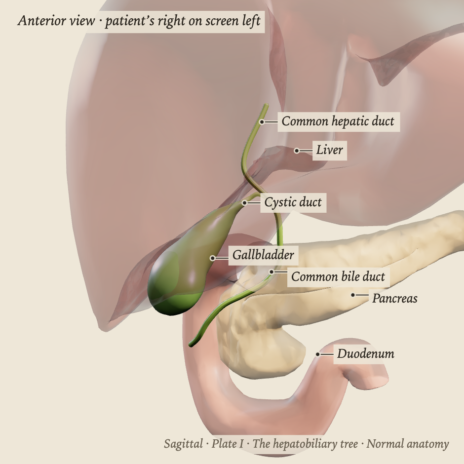

Same prompt, two figures
Prompt: the hepatobiliary tree

How it works
Ask
Name a structure or a variant in your own words, in Claude Code:
replaced right hepatic artery off the SMA
.Build
The skill starts from base organs reconstructed from open CT data and atlases. A variant may only reroute vessels and ducts through named landmarks, and every claim cites a source.
Study
Open the figure it saves. Rotate it, switch between normal anatomy and the variant, read the claims, and save the labelled plate as an image.
Install the skill
For Claude Code. From a clone of this repository, link the skill into your skills folder:
ln -s "$PWD/skills/sagittal" ~/.claude/skills/sagittalThen ask for a figure, for example an aberrant right subclavian artery
.
The plates
Select a plate to open the scene.
Anki decks
One deck per topic, made from the plates: structures unlabelled on the front of each card, labelled on the back. Import the .apkg file in Anki with File, Import. The standard decks use still images and work in every Anki client; the 3D decks run the scene inside the card and have only been tried on Anki desktop.